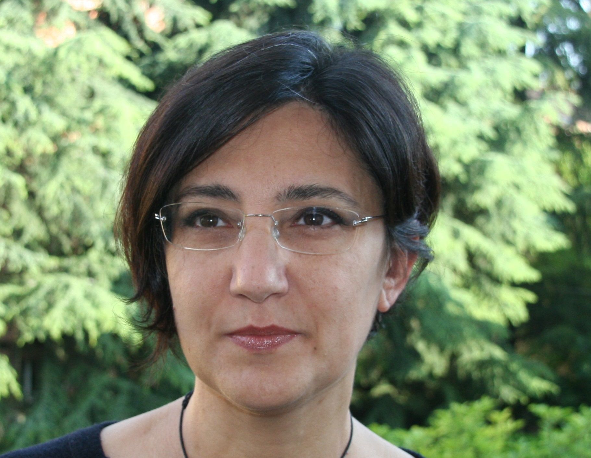

Officers
Maria Rosaria Ferrante (Coordinator) (2024-2025) - Coordinator
Maria Rosaria Ferrante is Full Professor of Economic Statistics. Her first name is Maria, but almost everyone calls her by the middle name, Rosaria. Her research focuses on small area estimation for socio-economic indicators (poverty, inequality, productivity, and consumption) and on economic well-being and life satisfaction.
Luca Aiello (2024-2025) - Secretary

I am Luca Aiello, currently in the final year of my Ph.D. (XXXVI cycle) in Statistics within the ECOSTAT Ph.D. program at the University of Milano Bicocca. Throughout the course of my doctoral studies, I've had the opportunity of collaborating with several people. Among them there are my supervisor, Lucia Paci, my co-supervisor, Raffaele Argiento, and Sudipto Banerjee, who hosted me during a visiting period at UCLA in the previous academic year. My research focus is centered on Bayesian spatio-temporal models and methods, with a keen interest in environmental statistics and Markov Chain Monte Carlo (MCMC) techniques. Over the years, I've also done teaching assistancies in basic statistics courses at Politecnico di Milano, Università Cattolica del Sacro Cuore di Milano, and the University of Bergamo. You can find more information on my webpage.
Martina Amongero (2025-2026)

I am Martina Amongero and I am currently a postdoctoral fellow at the Department of Economics, Social Studies, Applied Mathematics, and Statistics, Università di Torino. I obtained my Ph.D. in Pure and Applied Mathematics in 2024 at the Department of Mathematical Sciences, Politecnico di Torino, where I specialized in biostatistics with a scholarship sponsored by GSK Vaccines. My research focuses on Bayesian models for longitudinal data and Bayesian mixture models for community detection problems. I have a deep passion for statistics in all its facets, from theoretical modeling to computational techniques, with a particular emphasis on applications to real-world data. I am especially interested in data derived from epidemiological, biological, and medical contexts, aiming to bridge the gap between theoretical research and practical applications. You can find more info about me on my webpage!
Giulia Capitoli (2025-2026)

My name is Giulia Capitoli, and I am an Assistant Professor (RTD-A) in Medical Statistics at the Department of Medicine and Surgery at the University of Milano-Bicocca. I completed my Ph.D. in Biostatistics and Clinical Research in 2020, focusing on statistical methods for the identification of relevant biomarkers in thyroid cancer in mass spectrometry imaging analysis. My biostatistical background has given me the opportunity to work with international multidisciplinary teams as the leading statistician, focusing on research tackling paediatric leukaemia and kidney cancer. These experiences allowed me to collaborate with several people of different backgrounds, understanding the importance of statistical methodology and its effective communication.
Matteo Gianella (2025-2026)

I am a PhD candidate at the Department of Mathematics at Politecnico di Milano, under the supervision of Alessandra Guglielmi. My research focuses on the development of efficient and scalable algorithms for Bayesian nonparametrics models for the analysis of massive spatial and spatio-temporal data. During these years, I had the opportunity to collaborate with amazing people: together with Alessandra Guglielmi, my supervisor, I have collaborated, among others, with Raffaele Argiento from Università di Bergamo, Lucia Paci from Università Cattolica del Sacro Cuore and Fernando Quintana form Pontificia Universidad Católica de Chile, whom I had the pleasure to work with during my visiting period in Chile. If you are interested, you can find more info about me on my webpage!